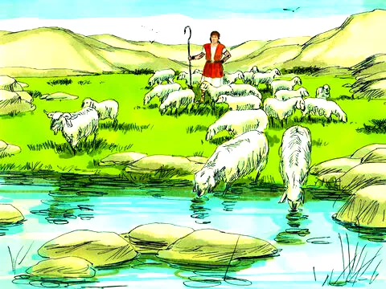
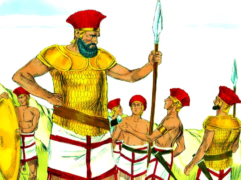
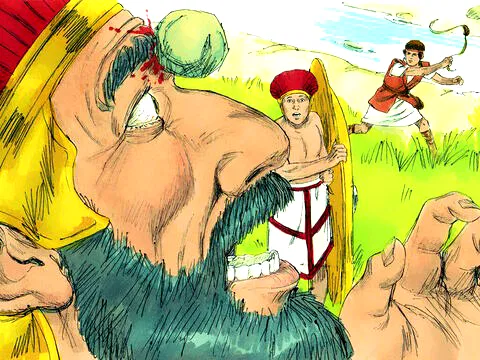
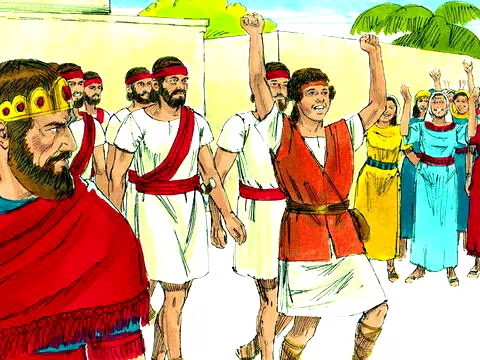

Davi e Golias
Referência Bíblica: 1 Samuel 17:1-51
Em Belém de Judá havia um homem efrateu, descendente da tribo de Judá, chamado Jessé. Ele foi neto de Boaz e Rute, mas esta já é outra história... Jessé tinha oito filhos e um deles, o mais novo, chamava-se Davi. Os três irmãos mais velhos de Davi se chamavam: Eliabe, Abinadabe e Samá (Simei). Certa vez, o povo de Israel estava enfrentando um problema muito grande: ataques de um povo inimigo que não conhecia a Deus, eram os filisteus. Os irmãos de Davi já eram adultos, por isso foram junto com o rei Saul para a guerra contra os filisteus. Enquanto acontecia a guerra, Davi que era ainda muito novo, continuava a pastorear o rebanho de seu pai. Ele gostava de cuidar das ovelhinhas e fazia isso muito bem.
Além dessa tarefa, Davi também ia servir a Saul, tocando-lhe harpa 🎵. Ele também servia como um mensageiro, indo até onde estavam os soldados para saber notícias, à pedido de seu pai, de como estavam seus irmãos no exército. A situação não era fácil. O exército inimigo do povo de Deus tinha uma arma poderosa: um enorme e valente gigante. Ele se chamava Golias. E todos os israelitas fugiam de medo dele. Durante dias o gigante Golias insultava e desafiava os israelitas para um duelo.
Nesta ocasião, Davi foi levar provisões e saber notícias dos irmãos, ele ouviu Golias, o guerreiro filisteu, a desafiar novamente o exército de Israel. Davi ouviu isso e ficou indignado: "- Afinal, quem é este filisteu malvado, para desafiar o exército do Deus vivo!? - e se prontificou a lutar contra o Gigante. Todos ficaram impressionados, inclusive os irmãos de Davi com a sua ousadia. O Gigante era tão grande e forte, e Davi era apenas um menino, corajoso e que confiava no grande Deus, todo poderoso. Davi contou ao rei como Deus já tinha lhe dado forças 💪 para enfrentar um leão 🦁 e um urso 🐻, que atacaram as ovelhas do rebanho 🐑🐑🐑. Ele confiava que da mesma maneira que Deus o ajudara contra os animais ferozes, o Senhor também o ajudaria na batalha contra o gigante. 🙏 O rei Saul, ficou preocupado, até tentou emprestar a sua armadura para Davi. Mas ele não se ajeitou com tudo aquilo e tirou logo. Davi pegou somente o seu cajado, escolheu 5 pedras do ribeiro e foi ao encontro de Golias. Quando o gigante viu que Davi era apenas um menino, não o levou a sério. Achou que estavam de brincadeira... mandaram uma criança para lutar com um grandalhão! — Por acaso sou um cachorro, para você vir contra mim com paus e pedras? - disse Golias. E começou a xingar e amaldiçoar a Davi. Mas Davi respondeu: - Golias, você contra mim com espada, lança e escudo, mas eu vou contra ti, em nome do Senhor, o Deus todo-poderoso dos exércitos de Israel, a quem você desafiou. É Ele quem vai vencer esta batalha e te entregará nas minhas mãos.
Então Davi pegou numa das pedras, colocou na funda (estilingue) e arremessou contra o gigante. A pedra atingiu em cheio a testa de Golias, ficou cravada, e de repente o grandalhão caiu por terra. Quando os filisteus viram que o seu melhor soldado tinha morrido, começaram todos a fugir de medo.
Moral da História
O Senhor salva e defende o Seu povo, sem armas, espadas ou força humana. Ele é poderoso para vencer as nossas guerras e nos livra do mal. Mesmo que estejamos enfrentando gigantes, se Deus está conosco, somos mais que vencedores! Pois muito maior é Deus o que está conosco! 🙏 O que parecia impossível aos olhos de todos aconteceu: Davi, um menino pequeno, mas com um grande Deus, venceu um inimigo valentão e gigantesco. Assim também acontece conosco, mesmo que sejamos pequeninos, o Nosso Deus é bem grandão! Ele nos ajuda a vencer.